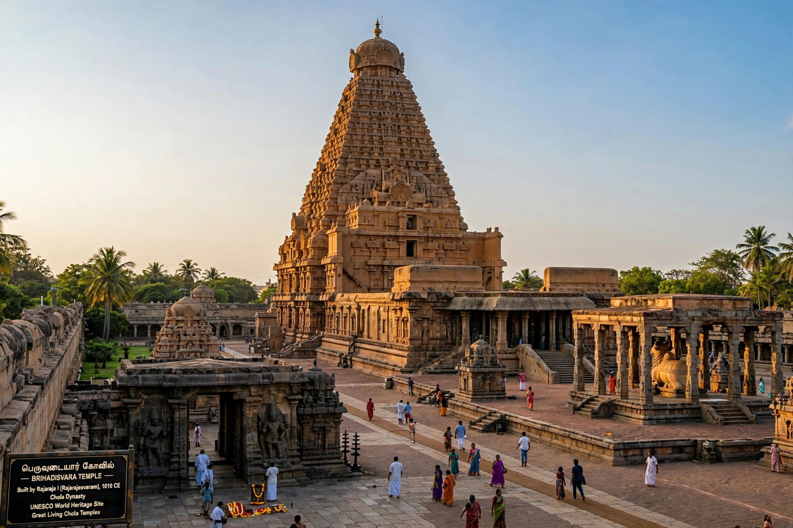

| Chola dynasty | |
|---|---|
| Capital | Thanjavur; later Gangaikonda Cholapuram |
| Peak | 9th–13th centuries CE |
| Greatest rulers | Rajaraja I, Rajendra I |
| Religion | Hinduism (Shaivism) |

The Chola dynasty was a Tamil dynasty originating from southern India, among the longest-ruling dynasties in world history. Early Cholas are mentioned in Sangam literature and Ashokan inscriptions; the medieval imperial Cholas rose under Vijayalaya in the mid-9th century and at their height in the 10th–12th centuries controlled much of South India, Sri Lanka, the Maldives and maritime trade reaching Southeast Asia.
Rajaraja Chola I (r. 985–1014) conquered the Chera and Pandya kingdoms, Sri Lanka and the Maldives, and built the Brihadisvara Temple at Thanjavur. His son Rajendra I marched to the Ganges and launched a naval expedition against Srivijaya in 1025.
The Cholas were noted for village self-government (the Uttaramerur inscriptions), efficient revenue surveys, irrigation tanks, bronze sculpture — especially Nataraja images — and temple architecture in the Dravidian style. Their power declined in the 13th century under Pandya pressure, ending around 1279.